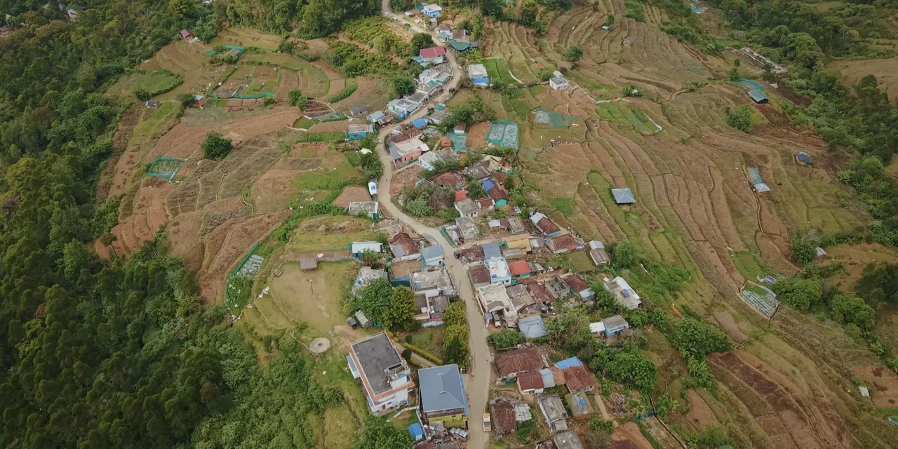
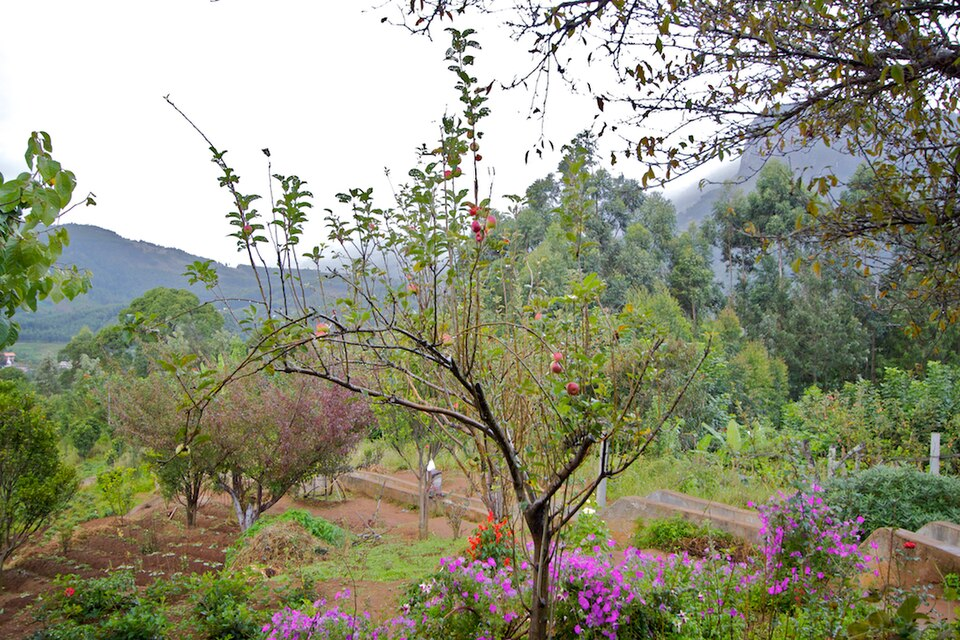
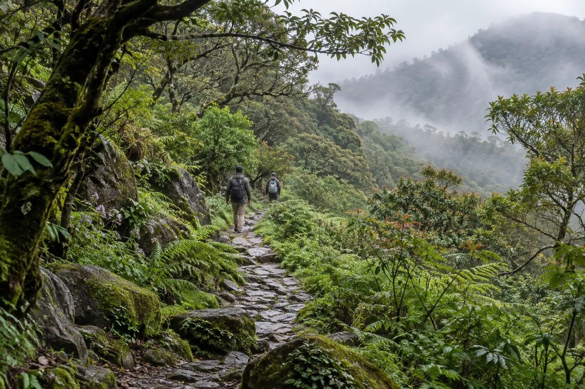

Farm landscape
Kanthalloor Fruit Farms
Kanthalloor's cool-climate farms grow apples, oranges, strawberries, plums, peaches, pomegranates, passion fruit, guava and apricots. Individual crops are seasonal rather than available throughout the year.

Kanthalloor sightseeing guide
Kanthalloor in Idukki, Kerala, is known for mountain scenery, fruit and vegetable cultivation, waterfalls, viewpoints, heritage landscapes and protected natural areas nearby.
Farms & local life
Farm tourism follows the seasons. What is flowering, ripening or available to buy changes through the year, so check locally before planning around a particular crop.
Farm landscape
Kanthalloor's cool-climate farms grow apples, oranges, strawberries, plums, peaches, pomegranates, passion fruit, guava and apricots. Individual crops are seasonal rather than available throughout the year.

Orchards
Apple cultivation is one of Kanthalloor's distinctive agricultural experiences and an unusual sight within Kerala's tropical landscape.
Seasonal produce
Strawberries are among the cool-climate crops grown around Kanthalloor. Farm access and crop availability vary, so visitors should confirm locally before travelling.
Terrace farming
Terraced fields across the slopes support crops such as cabbage, cauliflower, carrot, beans, potato and garlic, shaping much of the village landscape.
Village experience
Responsible farm visits can introduce travellers to seasonal produce and local cultivation methods. Activities differ by farm and should be confirmed directly.
Water & landscape
Conditions around waterfalls and small roads can change with the weather. Confirm local access and follow posted safety guidance.

Waterfalls
Seasonal streams and falls are part of the highland scenery around Kanthalloor. Water flow and safe access depend on current conditions.
Local waterfall
Irachilpara, also written Irachilppara or Erachilpara, is a waterfall associated with the Kanthalloor area. Check locally for current access before setting out.
Keezhanthoor
Keezhanthoor's waterfall landscape is listed among the scenic attractions near Kanthalloor by Kerala Tourism.
Reservoir landscape
Pattisseri Dam is noted by Kerala Tourism as one of the scenic attractions around Kanthalloor, with water and surrounding hills forming the main appeal.
Highland views
Mountain weather and access conditions can change quickly. Use established routes and confirm local conditions before visiting less-developed viewpoints.

Scenic overlook
A recognised viewpoint in the Kanthalloor area, Bhramaram looks across the surrounding highland landscape.
Rock landscape
Kulachivayal is locally listed among Kanthalloor's rock and viewpoint attractions. Visitors should confirm the appropriate access route locally.
Mountain scenery
Open slopes and elevated roads around the village reveal cultivated valleys, shola-covered hills and changing mist across the Western Ghats.

Off-road sightseeing
Jeep and off-road sightseeing is one way visitors may encounter the region's rougher highland routes and viewpoints. Routes, operators, duration and availability should be confirmed locally.
Ask about Kanthalloor sightseeingHistory & living culture

Megalithic heritage
The wider Kanthalloor–Marayoor region contains megalithic dolmens known as muniyaras. Important groups are associated with Marayoor, so they should be understood as a regional heritage landscape rather than all being inside Kanthalloor town.
Local heritage
A cave temple associated with Sri Rama is locally listed among Kanthalloor's heritage attractions. Confirm access and visitor guidance locally.
Living landscape
Orchards, terraced fields and traditional farming practices are central to Kanthalloor's identity and continue to shape village life.
Protected landscapes nearby
These protected areas are near Kanthalloor rather than attractions within the village. Check current Kerala Forest and Wildlife Department information before planning access or activities.

National park nearby
Shola forest and grassland habitats surround parts of the Kanthalloor region. Entry and permitted activities are governed by current forest regulations.

Wildlife sanctuary nearby
Chinnar protects dry forest, grassland and river habitats in Idukki and is known for varied wildlife, including the grizzled giant squirrel.
Inside Chinnar
Thoovanam Waterfalls lies within Chinnar Wildlife Sanctuary and is associated with a forest-managed guided trekking programme. Check current official access information before visiting.
Extend the journey

Neighbouring heritage landscape
Marayoor combines naturally growing sandalwood, sugarcane farms, traditional jaggery production, megalithic muniyaras, prehistoric rock paintings and the Pambar River. It can be combined naturally with a Kanthalloor trip without treating these sites as Kanthalloor town attractions.
A wider highland itinerary
Travellers based in Munnar may include Kanthalloor and Marayoor in a wider itinerary. Eravikulam National Park, Lakkam Waterfalls, tea plantations, Mattupetty Dam, Echo Point, Kundala Dam and Top Station are Munnar-area attractions—not Kanthalloor local sightseeing.
Explore places to stay or contact the local guide while planning your route.